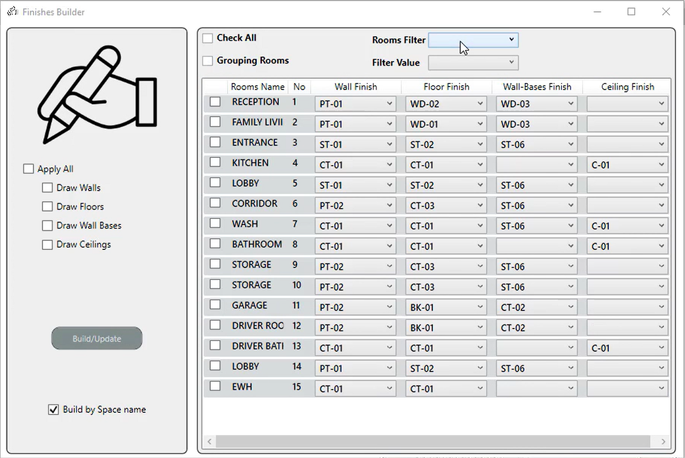
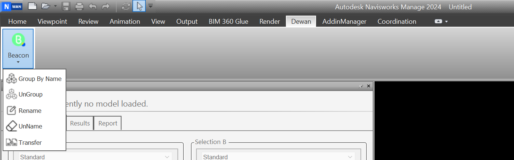

Selected work
APS Raumbuch
Cloud · openBIM
APS Raumbuch
ACC-connected room book generator that also runs fully offline against IFC.
View project →
9 tools · video
Revit Automation Suite
Nine production Revit plugins: model management, interior finishes, quantity take-off. With demos.
View project →
Navisworks · WPF
Clash Management
BEACON and COLLIDE: clash grouping, status sync, and matrix generation.
View project →
Parametric · 4 tools
Curtain Panel Suite
Generator → Scheduler → Drawings → Tagger. A facade from parametric definition to annotated documentation.
View project →
Power BI · 9 dashboards
BIM Analytics
Model health, clash detection, issues and resourcing: automated reporting pipelines on ACC and BIM 360.
View project →
Scheduled services
VITAL & ANT
Nightly model-health checks and automated deliverable exports. Nothing depends on someone remembering.
View project →
KEEPR · Sheet Bridge
ACC Integrations
Automated weekly backup of ACC and BIM 360, plus bulk attribute editing across cloud projects.
View project →Speckle + LLM
2023
Speckle + LLM
Natural-language queries over 3D models, before it was a category.
View project →